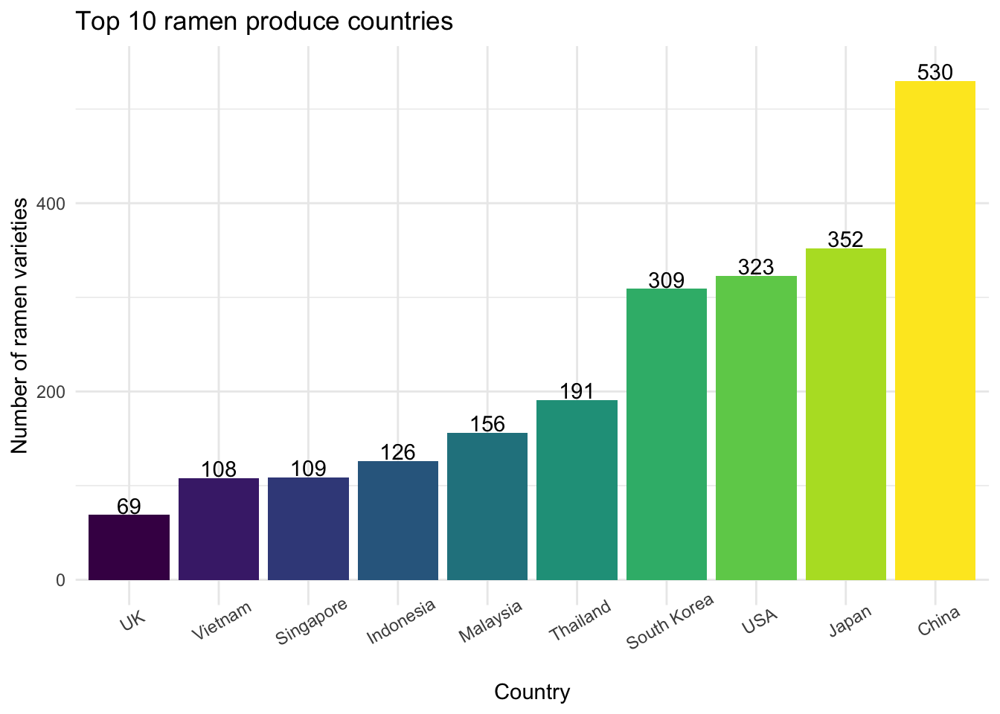
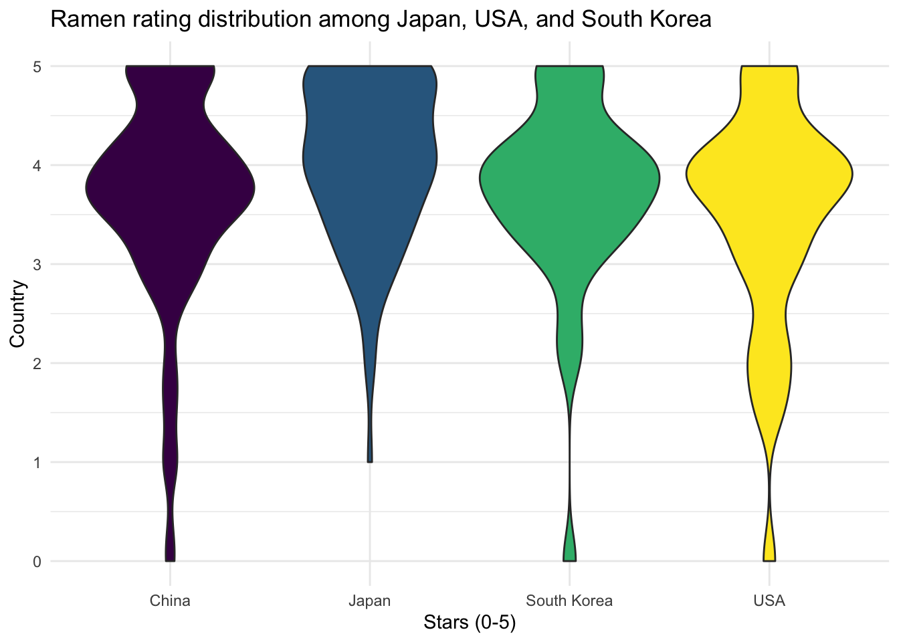
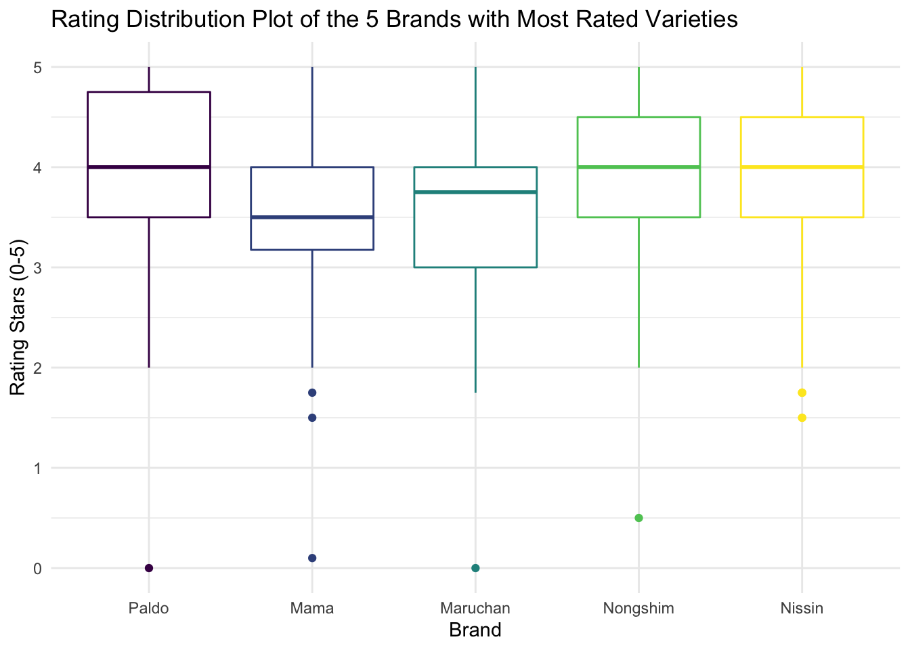
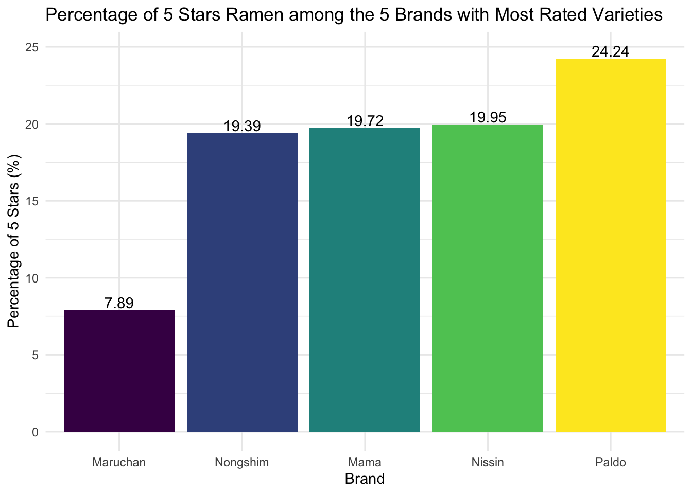
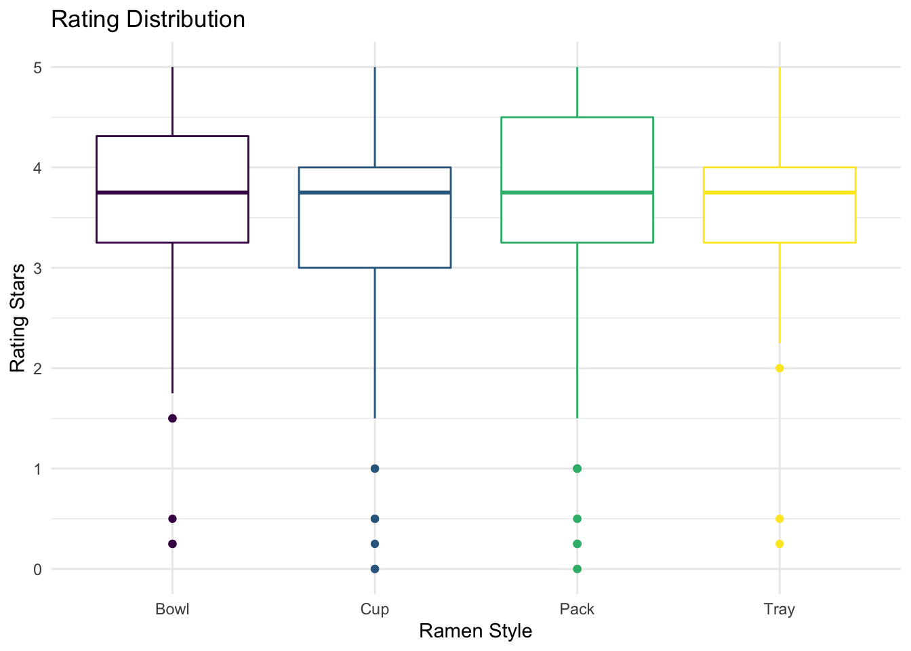
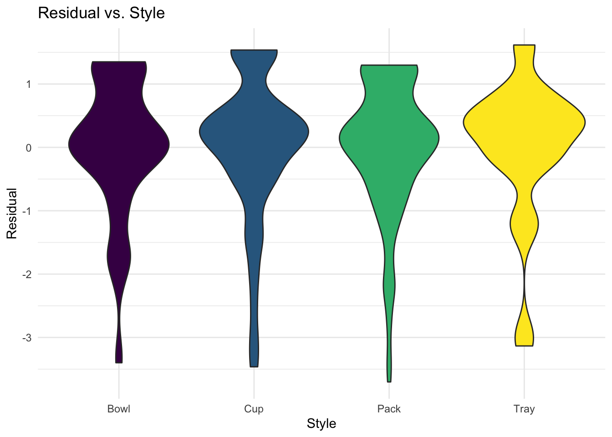

Ramen Adventure Report

Motivation
All members of the group are noodles lovers and want to look for the best instant noodles to purchase as well as the worst instant noodles to avoid purchasing in the future. We found an amazing dataset about ramen ratings in Kaggle and decided to use it as a reference to answer our questions.
Initial Questions
- Primarily, we just wanted to know what are the best and worst instant noodles according to the dataset.
- After we looked further into the dataset, we thought it would also be interesting if we explore more about:
- Which country/brand produced the greatest number of top 10 ramens?
- Which countries produced the most varieties of ramens? What is the ramen rating distribution of the top ramen produce countries?
- What are the top countries that have the highest average ramen rating stars recorded in our dataset? What about the bottom ones?
- Which 5 brands produced the most varieties? What are the rating stars distribution of these 5 brands? For these 5 brands, what are their percentage of 5-star ramens?
- Would the package style of ramen affect the rating?
Data
Data Source and Structure
- The dataset was republished according to The Ramen Rater by Aleksey Bilogur. It can be accessed here.
- The Ramen Rater is a website on which Hans Lienesch posted his reviews of instant noodles.
- Each record in the raw dataset is a single ramen product review:
Review #: The unique ID for reviews. More recently reviewed ramen varieties have higher numbers.Brand: The brand name of the ramen variety.Variety: The product name.Country: The country where the ramen variety is from.Style: The package tyle/style of the ramen variety.Starsindicates the ramen quality, as assessed by the rater, Hans, on a 5-point scale.Top Ten: The rank and rated year of each top 10 ramen.
Data Cleaning
tidy_ramen =
read_csv("./ramen-ratings.csv") %>%
janitor::clean_names() %>%
separate(top_ten, into = c("year", "rank"), sep = " #", convert = TRUE) %>%
mutate(
country = str_replace(country, "Hong Kong", "China"),
country = str_replace(country, "Taiwan", "China"),
style = factor(style),
country = factor(country),
brand = factor(brand),
stars = as.numeric(stars)
)We conducted data cleaning on the raw dataset, which included:
- Separated the variable “top_ten” into two columns (
yearandrank). - Recoded values “Taiwan”, “Hong Kong” for
countryas “China” to keep consistency of level with other values. - Set variables with the appropriate data types.
Exploratory Analysis
Top 10 Ramens by Country/Brand
We generated bar charts of the number of top 10 ramen varieties for each country/brand as below:
top_country_bar =
tidy_ramen %>%
drop_na(rank) %>%
count(country) %>%
mutate(country = fct_reorder(country, n)) %>%
ggplot(aes(x = country, y = n, fill = country)) +
geom_col() +
geom_text(
aes(label = n),
nudge_y = 0.125
) +
labs(
title = "Number of top 10 ramen varieties produced by each country",
y = "Number of top 10 ramen varieties",
x = "Country"
)
top_country_bar
top_brand_bar =
tidy_ramen %>%
drop_na(rank) %>%
count(brand) %>%
mutate(brand = fct_reorder(brand, n)) %>%
ggplot(aes(x = brand, y = n, fill = brand)) +
geom_col() +
geom_text(
aes(label = n),
nudge_y = 0.125
) +
labs(
title = "Number of top 10 ramen varieties produced by each brand",
y = "Number of top 10 ramen varieties",
x = "Brand"
) +
theme(axis.text.x = element_text(angle = 30))
top_brand_bar
Singapore was the country that had the most top 10 ramen varieties (7), while Prima Taste was the brand that had the most top 10 ramen varieties (5).
Exploration by Country
For this section, we performed data analysis on the ramen variety count by country to give us an idea about the top ramen produce countries. We created a bar graph of the top 10 ramen produce countries with their counts of ramen varieties labeled on the graph.
top10_country =
tidy_ramen %>%
count(country) %>%
mutate(
country = fct_reorder(country, n),
country_rank = min_rank(desc(n))
) %>%
filter(country_rank <= 10) %>%
ggplot(aes(x = country, y = n, fill = country)) +
geom_col() +
geom_text(
aes(label = n),
nudge_y = 10
) +
labs(
title = "Top 10 ramen produce countries",
y = "Number of ramen varieties",
x = "Country"
) +
theme(axis.text.x = element_text(angle = 30))
top10_country
The top four countries that had the most ramen varieties rated are China (n = 530), Japan (n = 352), USA (n = 323) and South Korea (n = 309), with over 300 varieties of ramen recorded. The number of ramen varieties produced by China far outweighs the ramen varieties from other countries.
Initially we would love to plot ramen rating stars distribution graph on the top 3 ramen produce countries. However, after checking the bar graph result, we decided to include the top 4 ramen produce countries in the following analysis, since the counts of ramen varieties produced by the 3rd and 4th countries (USA and South Korea, with 323 and 309 respectively) are pretty close.
Consequently, we created a violin graph for the rating stars distribution among the top 4 ramen produce countries.
top4_violin =
tidy_ramen %>%
filter(country == c("China", "Japan", "USA", "South Korea")) %>%
drop_na(stars) %>%
ggplot(aes(x = country, y = stars, fill = country)) +
geom_violin() +
labs(
title = "Ramen rating distribution among Japan, USA, and South Korea",
x = "Stars (0-5)",
y = "Country"
)
top4_violin
According to the graph, it appears that most rated ramen varieties from China, South Korea, and USA have a peak of rating scores within 3.5 to 4 stars and a second but smaller peak at score 5. Among these four countries, Japan has a relatively higher proportion of rating scores within 4 to 5 stars.
Our next step was to calculate the average ramen rating stars for each country in our dataset to find the top three and bottom three countries. But before doing that, we need to check if the number of ramens rated and recorded in our dataset is large enough to present the average ramen rating stars for each country.
To do this, we ploted a scatter plot of average rating stars vs. count of ramen varieties for each country.
num_var_country =
tidy_ramen %>%
count(country)
avg_country =
tidy_ramen %>%
group_by(country) %>%
summarize(avg = round(mean(stars, na.rm = TRUE), 2))
avg_num_country =
num_var_country %>%
inner_join(avg_country, by = "country")
scatter_avg_num =
avg_num_country %>%
ggplot(aes(x = n, y = avg)) +
geom_point(color = "Orange") +
labs(
x = "Number of varieties rated",
y = "Average stars",
title = "Average stars vs. Number of varieties rated for countries"
)
scatter_avg_num
After checking the scatter plot, we decided to focus on only countries with 30 or more varieties rated and recorded in our dataset, and created a bar chart for the average ramen rating stars for these countries.
avg_country_bar =
avg_num_country %>%
filter(n >= 30) %>%
mutate(
country = fct_reorder(country, avg),
text_label = str_c("Country: ", country, "\nAverage Stars: ", avg)
) %>%
plot_ly(x = ~country, y = ~avg, color = ~country, type = "bar", text = ~text_label) %>%
layout(
title = "Average stars for each country with 30 or more varieties rated",
xaxis = list(title = "Country"),
yaxis = list(title = "Average stars")
)
avg_country_barAmong countries with 30 or more varieties rated, it appears that the top 3 average rating countries have average rating scores around 4.1 out of 5 stars. Malaysia had the highest average rating score (4.15 out of 5) among all countries, followed by Singapore (4.13 out of 5) and Indonesia (4.07 out of 5). These countries produced ramens with higher quality (better taste) despite that they were not the top ramen producers in varieties.
On the contrary, bottom 3 average rating countries are Canada (2.24 out of 5), UK (3 out of 5), and Vietnam (3.19 out of 5).
Exploration by Brand
five_stars =
tidy_ramen %>%
select(brand, stars) %>%
group_by(brand) %>%
filter(stars == 5)
zero_stars =
tidy_ramen %>%
select(brand, stars) %>%
group_by(brand) %>%
filter(stars == 0)The total number of brands is 355. The number of brands with 5-star ramens is 106, and the number of brands with 0-star ramens is 21.
We first drew a bar chart to show the numbers of varieties for the 5 brands with most varieties rated.
most_various =
tidy_ramen %>%
group_by(brand) %>%
summarize(num_varieties = n()) %>%
top_n(5) %>%
mutate(brand = fct_reorder(brand, num_varieties))
most_various_plot =
most_various %>%
mutate(text_label = str_c("Brand: ", brand, "\nNumber of varieties: ", num_varieties)) %>%
plot_ly(
x = ~brand, y = ~num_varieties, color = ~brand, type = "bar",
text = ~text_label,
marker = list(color = 'viridis',
line = list(color = 'white', width = 1.5))) %>%
layout(title = "5 Ramen Brands with Most Rated Varieties",
xaxis = list(title = "Brand"),
yaxis = list(title = "Number of Varieties"))
most_various_plotNissin is the winner with 381 ramen varieties rated. The second to fifth brands are Nongshim, Maruchan, Mama, and Paldo. Each of them has about 60 to 100 ramen varieties rated.
For these 5 brands, we created a box plot about their rating distributions.
distri_various =
tidy_ramen %>%
drop_na(stars) %>%
filter(brand %in% c("Paldo", "Mama", "Maruchan", "Nongshim", "Nissin")) %>%
mutate(brand = forcats::fct_relevel(brand, c("Paldo", "Mama", "Maruchan", "Nongshim", "Nissin"))) %>%
ggplot(aes(x = brand, y = stars, color = brand)) +
geom_boxplot() +
labs(
title = "Rating Distribution Plot of the 5 Brands with Most Rated Varieties",
x = "Brand",
y = "Rating Stars (0-5)"
)
distri_various
The median rating stars for Nissin, Nongshim, and Paldo are close to 4 stars. The medians for Mama and Maruchan are lower than 4 stars. More than 75% of products of these 5 brands were rated above or equal to 3 Stars.
We then created a bar chart showing the percentage of 5-star for each of these 5 brands from the lowest on the left to the highest on the right.
five_stars_various =
tidy_ramen %>%
drop_na(stars) %>%
filter(brand %in% c("Paldo", "Mama", "Maruchan", "Nongshim", "Nissin"),
stars == 5) %>%
group_by(brand) %>%
summarize(num_five = n())
num_five_various =
full_join(
most_various, five_stars_various, by = c("brand")
) %>%
mutate(prct = num_five / num_varieties * 100)
prct_plot =
num_five_various %>%
mutate(brand = fct_reorder(brand, prct)) %>%
ggplot(aes(x = brand, y = prct, fill = brand)) +
geom_col() +
geom_text(
aes(label = round(prct, 2)),
nudge_y = 0.5
) +
labs(
title = "Percentage of 5 Stars Ramen among the 5 Brands with Most Rated Varieties",
x = "Brand",
y = "Percentage of 5 Stars (%)"
)
prct_plot
All of these 5 brands have at least one ramen variety that was rated as 5 stars. Paldo has the highest percentage of ramen varieties rated as 5 stars, while Maruchan has the lowest percentage of ramen varieties rated as 5 stars.
Exploration by Style
In this Ramen dataset, there are 8 ramen packaging styles. We wonder if different packaging styles may affect the rating of ramen by Hans - similar to that coke in can is always better than coke in plastic bottle.
First, we created a bar plot for the number of rated varieties in each style.
most_various =
tidy_ramen %>%
group_by(style) %>%
summarize(num_varieties = n()) %>%
mutate(
style = fct_reorder(style, num_varieties)
) %>%
plot_ly(x = ~style, y = ~num_varieties, color = ~style, type = "bar",
text = ~num_varieties, textposition = "outside",
marker = list(color = 'viridis',
line = list(color = 'viridis', width = 1.5))) %>%
layout(title = "Number of Rated Varieties in Each Style",
xaxis = list(title = "Style"),
yaxis = list(title = "Number of varieties"))
most_variousWe see that the style of mast varieties rated is Pack, with 1531 varieties rated in the dataset. Since there are too few ramen varieties in Bar (1), Can ((1)), and Box (6), we’ll exclude these styles in the following analysis.
Then, we plotted a box plot for the distribution of ramen rating by packaging style.
four_styles =
tidy_ramen %>%
filter(style == c("Bowl", "Cup", "Pack", "Tray"))
distri_various =
four_styles %>%
drop_na(stars) %>%
ggplot(aes(x = style, y = stars, color = style)) +
geom_boxplot() +
labs(
title = "Rating Distribution of Different Styles",
x = "Style",
y = "Stars (0-5)"
)
distri_various
According to the box plot, we can see that most ramens in the four styles have rating scores higher than 3 stars out of 5. The medians of stars for Bowl, Cup, Pack, and Tray ramens are similar (around 3.7 stars). Among the four styles, generally, bowl ramens tend to have higher rating scores comparing to others, while cup ramens seem to have lower rating scores, despite that pack ramens have the most outliers with low rating scores.
Finally, we tried to fit a linear model with stars as an outcome depending on style.
lm_style =
lm(stars ~ style, data = four_styles)
lm_style_output =
lm_style %>%
broom::tidy() %>%
select(term, estimate, p.value) %>%
mutate(term = str_replace(term, "^style", "Style: ")) %>%
kable(digits = 3)
lm_style_output| term | estimate | p.value |
|---|---|---|
| (Intercept) | 3.649 | 0.000 |
| Style: Cup | -0.186 | 0.175 |
| Style: Pack | 0.052 | 0.633 |
| Style: Tray | -0.265 | 0.229 |
From the results (reference category: Bowl), we can see that the rating scores are not statistically significantly different across these 4 styles at a significant level of 0.05.
To be cautious in having conclusions, we also plotted a violin graph for model diagnostics.
lm_style_diag =
four_styles %>%
modelr::add_residuals(lm_style) %>%
ggplot(aes(x = style, y = resid, fill = style)) +
geom_violin() +
labs(
x = "Style",
y = "Residual",
title = "Residual vs. Style"
)
lm_style_diag
From the violin graph, we can see that the residual distribution by styles is generally left-skewed, indicating that linear regression model might not be an appropriate approach for the question based on this dataset because of the assumption violation.
The reasons for the violation may include:
- the dataset of ramen varieties is actually not a random sample from all varieties all over the world;
- the underlying distribution of ramen ratings is probably not normal, since the ratings were just based on the rater’s personal preference.
Discussion
Top 10 Ramens
Results from the analysis on top 10 ramens indicate that Singapore was really good at producing instant noodles, or at least Hans really appreciate instant noodles with Singapore, or more generally, Southeast Asia taste from 2012 to 2016. It would be hard to generalize the conclusion, since the rating was actually based on Hans’ personal preference. One of our group members, or me, doesn’t agree with Hans on this topic.
By Country
From our study results on ramen rating by country, we conclude that most ramens rated in our dataset were produced by Asian countries (8 out of 10 of the top ramen produce countries are from Asia). This makes sense because Asian countries are the major consumers of ramens.
We also noticed that Malaysia, Singapore, and Indonesia had the highest average ramen rating stars (all above 4 stars out of 5). This finding aligns with the result from the analysis on top 10 ramens, where we found that Singapore had the most top 10 ramen varieties.
However, we are worried about that the result from this dataset might be biased, considering that some countries in the dataset didn’t have enough ramen varieties recorded and we had to exclude them from our analysis.
By Brand
From our study results on ramen rating by brand, we conclude that the ramens produced by the 5 brands with most varieties rated in the dataset, Nissin, Nongshim, Maruchan, Mama, and Paldo, were generally favored by Hans, with over 75% of ramens produced by these 5 brands rated 3 or more stars. This is not surprising, since we believe that having many ramen varieties can somehow indicate professionalism in making instant noodles.
By Style
We fitted a linear regression model to compare the rating across ramens in different styles, excluding some types with too few varieties recorded in the dataset. However, there seems to be assumption violation, because the residual distribution by styles is left-skewed.
The reasons for the violation may include:
- The dataset of ramen varieties is actually not a random sample from all varieties all over the world.
- The underlying distribution of ramen ratings is probably not normal, since the ratings were just based on the rater’s personal preference.
Limitations
As also mentioned above, the limitations of this project may include:
- Sample size of certain strata (country/brand/style) is too small for us to conduct analysis.
- The ramen rating was based on Hans’ personal preference and might be hard to generalize.
- Actually, the dataset is not a random sample from all ramen varieties in the world. The rated varieties were from convenience sampling.
- The uncertainty of the underlying distribution keeps us away from conducting parametric analysis.